Registros de Desplazamiento
- Introducción
- Registro de desplazamiento de entrada y salida serie
- Registro de desplazamiento de entrada paralela y salida serie
- Registro de desplazamiento de entrada serie y salida paralela
- Registro de desplazamiento universal de entrada/salida en paralelo
- Contadores de anillo
- references
Autor original: Dennis Crunkilton
Introducción
Los registros de desplazamiento, al igual que los contadores, son una forma delógica secuencial. La lógica secuencial, a diferencia de la lógica combinacional, no solo se ve afectada por las entradas presentes, sino también por la historia anterior. En otras palabras, la lógica secuencial recuerda eventos pasados.
Los registros de desplazamiento producen un retraso discreto de una señal o forma de onda digital. Una forma de onda sincronizada con unreloj, una onda cuadrada que se repite, se retrasa por"n"tiempos de reloj discretos, donde"n"es el número de etapas del registro de desplazamiento. Por lo tanto, un registro de desplazamiento de cuatro etapas retrasa la "entrada de datos" en cuatro relojes para la "salida de datos". Las etapas en un registro de desplazamiento sonetapas de retraso, normalmente escribe"D"Chanclas o tipo"JK"Chanclas.
Anteriormente, como memoria digital servían registros de desplazamiento muy largos (varios cientos de etapas). Esta aplicación obsoleta recuerda a las líneas de retardo acústico de mercurio utilizadas como memoria de las primeras computadoras.
La transmisión de datos en serie, a una distancia de metros a kilómetros, utiliza registros de desplazamiento para convertir datos paralelos a formato en serie. Las comunicaciones de datos en serie reemplazan muchos cables de datos paralelos lentos con un único circuito en serie de alta velocidad.
Los datos en serie a lo largo de distancias más cortas, de decenas de centímetros, utilizan registros de desplazamiento para introducir y sacar datos de los microprocesadores. Numerosos periféricos, incluidos convertidores de analógico a digital, convertidores de digital a analógico, controladores de pantalla y memoria, utilizan registros de desplazamiento para reducir la cantidad de cableado en las placas de circuito.
Algunos circuitos contadores especializados utilizan registros de desplazamiento para generar formas de onda repetidas. Los registros de desplazamiento más largos, con la ayuda de la retroalimentación, generan patrones tan largos que parecen ruido aleatorio.pseudo-ruido.
Los registros de turnos básicos se clasifican por estructura según los siguientes tipos:
- Entrada/salida serie
- Entrada paralela/salida serie
- Entrada serie/salida paralela
- Entrada/salida paralela universal
- Contador de timbres
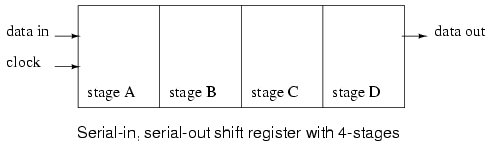
Arriba mostramos un diagrama de bloques de un registro de desplazamiento de entrada/salida en serie, que tiene 4 etapas de longitud. Los datos en la entrada se retrasarán cuatro períodos de reloj desde la entrada hasta la salida del registro de desplazamiento.
Los datos en "datos en", arriba, estarán presentes en el escenarioAsalida después del primer pulso de reloj. Después de la segunda etapa de pulsoAlos datos se transfieren a la etapaBsalida y los "datos de entrada" se transfieren a la etapaAproducción. Después del tercer cronómetro, etapaCes reemplazado por etapaB; escenarioBes reemplazado por etapaA; y la etapa A se reemplaza por "datos en". Después del cuarto reloj, los datos originalmente presentes en "datos de entrada" están en la etapaD, "producción". Los datos de "primero en entrar" son "primeros en salir", ya que se desplazan de "datos de entrada" a "datos de salida".
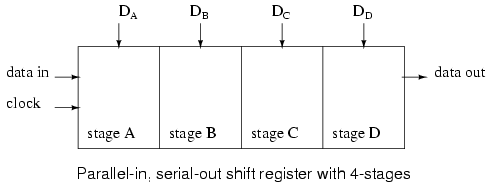
Los datos se cargan en todas las etapas a la vez de un registro de desplazamiento de entrada/salida en paralelo. A continuación, los datos se transfieren mediante "salida de datos" mediante impulsos de reloj. Dado que arriba se muestra un registro de desplazamiento de 4 etapas, se requieren cuatro pulsos de reloj para desplazar todos los datos. En el diagrama de arriba, etapaDlos datos estarán presentes en la "salida de datos" hasta el primer pulso de reloj; escenarioClos datos estarán presentes en la "salida de datos" entre el primer reloj y el segundo pulso de reloj; escenarioBlos datos estarán presentes entre el segundo reloj y el tercer reloj; y escenarioALos datos estarán presentes entre el tercer y cuarto reloj. Después del cuarto pulso de reloj y posteriormente, deben aparecer bits sucesivos de "datos de entrada" en "datos de salida" del registro de desplazamiento después de un retraso de cuatro pulsos de reloj.
Si se conectaran cuatro interruptores a DAa través de DD, el estado podría leerse en un microprocesador usando solo un pin de datos y un pin de reloj. Dado que agregar más interruptores no requeriría pines adicionales, este enfoque parece atractivo para muchas entradas.
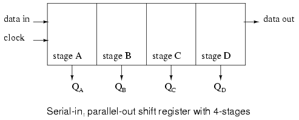
Arriba, cuatro bits de datos se desplazarán desde "datos de entrada" mediante cuatro pulsos de reloj y estarán disponibles en QAa través de QDpara controlar circuitos externos como LED, lámparas, controladores de relé y bocinas.
Después del primer reloj, los datos en "datos de entrada" aparecen en QA. Después del segundo cronómetro, La vieja QAlos datos aparecen en QB; QArecibe los siguientes datos de "datos en". Después del tercer cronómetro, QBlos datos están en QC. Después del cuarto reloj, QClos datos están en QD. Esta etapa contiene los datos presentes por primera vez en "datos en". El registro de desplazamiento ahora debería contener cuatro bits de datos.
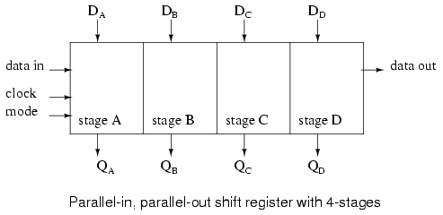
Un registro de desplazamiento de entrada/salida paralela combina la función del registro de desplazamiento de entrada y salida en paralelo con la función del registro de desplazamiento de entrada y salida en serie para producir el registro de desplazamiento universal. La palanca de cambios "hacer cualquier cosa" tiene un precio: el mayor número de pines de E/S (entrada/salida) puede reducir el número de etapas que se pueden empaquetar.
Datos presentados en DAa través de DDse carga en paralelo en los registros. Estos datos en QAa través de QDpuede cambiarse según el número de pulsos presentados en la entrada del reloj. Los datos desplazados están disponibles en QAa través de QD. La entrada "modo", que puede ser más de una entrada, controla la carga paralela de datos desde DAa través de DD, cambio de datos y dirección del cambio. Hay registros de desplazamiento que desplazarán los datos hacia la izquierda o hacia la derecha.
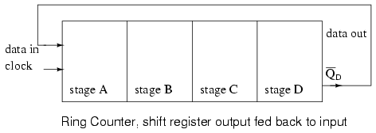
Si la salida en serie de un registro de desplazamiento está conectada a la entrada en serie, los datos se pueden desplazar perpetuamente alrededor del anillo siempre que haya pulsos de reloj presentes. Si la salida se invierte antes de ser retroalimentada como se muestra arriba, no tenemos que preocuparnos por cargar los datos iniciales en el "contador de anillo".
Registro de desplazamiento de entrada y salida serie
Los registros de desplazamiento de entrada y salida en serie retrasan los datos un tiempo de reloj para cada etapa. Almacenarán un poco de datos para cada registro. Un registro de desplazamiento de entrada y salida en serie puede tener de uno a 64 bits de longitud, más si los registros o paquetes están en cascada.
A continuación se muestra un registro de desplazamiento de una sola etapa que recibe datos que no están sincronizados con el reloj del registro. Los "datos en" en elDpin del tipoD FF(Flip-Flop) no cambia de nivel cuando el reloj cambia de bajo a alto. Es posible que deseemos sincronizar los datos con un reloj de todo el sistema en una placa de circuito para mejorar la confiabilidad de un circuito lógico digital.
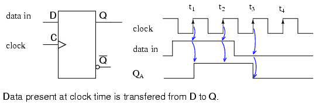
El punto obvio (en comparación con la figura siguiente) ilustrado anteriormente es que cualquier "dato en" que esté presente en elDpin de un tipoDFF se transfiere de D a la salida Q a la hora del reloj. Dado que nuestro registro de desplazamiento de ejemplo utiliza elementos de almacenamiento sensibles al borde positivo, la salidaQsigue elDentrada cuando el reloj pasa de bajo a alto como se muestra con las flechas hacia arriba en el diagrama de arriba. No hay duda de qué nivel lógico está presente en el tiempo del reloj porque los datos son estables mucho antes y después del flanco del reloj. Este rara vez es el caso en registros de desplazamiento de múltiples etapas. Pero este fue un ejemplo fácil para empezar. Sólo nos preocupa el borde positivo del reloj, de menor a mayor. El flanco descendente puede ignorarse. es muy facil de verQseguirDa la hora del reloj de arriba. Compare esto con el diagrama siguiente donde los "datos de entrada" parecen cambiar con el flanco positivo del reloj.
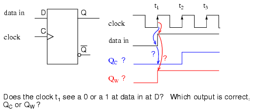
Dado que "datos en" parece cambiar a la hora del reloj t1arriba, ¿qué significa el tipo?DFF ver a la hora del reloj? La respuesta corta y simplificada es que ve los datos que estaban presentes enDantes del reloj. Eso es lo que se transfiere aQa la hora del reloj t1. La forma de onda correcta es QC. en t1Q llega a cero si aún no es cero. ElDel registro no ve uno hasta el momento t2, en cuyo momento Q sube.
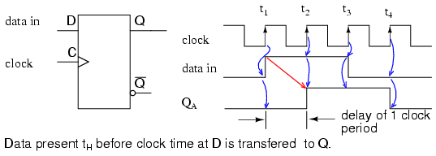
Dado que los datos anteriores, presentes enDestá programado paraQa la hora del reloj, yQno puede cambiar hasta la próxima hora del reloj, elDFF retrasa los datos un período de reloj, siempre que los datos ya estén sincronizados con el reloj. la qALa forma de onda es la misma que la "entrada de datos" con un retraso de un período de reloj.
Una mirada más detallada a cuál es la entrada del tipo.DFlip-Flop ve la hora del reloj. Consulte la figura siguiente. Dado que los "datos entrantes" parecen cambiar según la hora del reloj (arriba), necesitamos más información para determinar cuál es elDFF ve. Si los "datos en" son de otra etapa del registro de desplazamiento, otro mismo tipoDFF, podemos sacar algunas conclusiones basadas enficha de datosinformación. Los fabricantes de lógica digital ponen a disposición información sobre sus piezas en hojas de datos, que antes solo estaban disponibles en una colección llamadalibro de datos. Los libros de datos todavía están disponibles; sin embargo, el sitio web del fabricante es la fuente moderna.
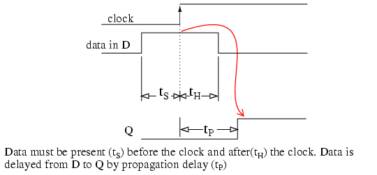
Los siguientes datos se extrajeron de la hoja de datos CD4006b para operación a 5VDC, que sirve como ejemplo para ilustrar el momento.
- tS=100ns
- tH=60 ns
- tP=200-400 ns tipo/máx.
tSes eltiempo de configuración, los datos de hora deben estar presentes antes de la hora del reloj. En este caso los datos deben estar presentes enD 100ns prior to the clock. Furthermore, the data must be held for tiempo de espera tH=60 ns después del tiempo del reloj. Estas dos condiciones deben cumplirse para sincronizar de manera confiable los datos desdeD to Qdel Flip-Flop.
No hay problema en cumplir con el tiempo de configuración de 60 ns ya que los datos enDha estado allí durante todo el período de reloj anterior si proviene de otra etapa del registro de desplazamiento. Por ejemplo, a una frecuencia de reloj de 1 Mhz, el período del reloj es de 1000 µs, tiempo suficiente. En realidad, los datos estarán presentes durante 1000 µs antes del reloj, lo cual es mucho mayor que el t mínimo requerido.Sde 60ns.
El tiempo de espera tHSe cumple =60ns porque D conectado a Q de otra etapa no puede cambiar más rápido que el retardo de propagación de la etapa anterior tP=200ns. El tiempo de espera se cumple siempre que se reduzca el retardo de propagación del mensaje anterior.DFF es mayor que el tiempo de espera. Datos enDimpulsado por otra etapaQno cambiará más rápido que 200 ns para el CD4006b.
En resumen, salidaQsigue a la entrada D casi en el tiempo del reloj si los Flip-Flops se conectan en cascada en un registro de desplazamiento de múltiples etapas.
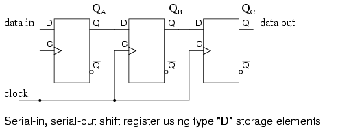
tres tiposDLos flip-flops se conectan en cascada de Q a D y los relojes se ponen en paralelo para formar un registro de desplazamiento de tres etapas arriba.
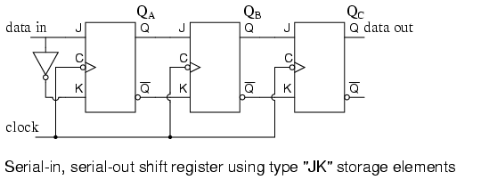
TipoJKLos FF conectaron en cascada Q a J, Q' a K con relojes en paralelo para producir una forma alternativa del registro de desplazamiento anterior.
Un registro de desplazamiento de entrada/salida en serie tiene una entrada de reloj, una entrada de datos y una salida de datos de la última etapa. En general, las otras salidas de etapa no están disponibles. De lo contrario, sería un registro de desplazamiento de entrada en serie y salida en paralelo.
Las formas de onda siguientes son aplicables a cualquiera de las dos versiones anteriores del registro de desplazamiento de entrada y salida en serie. Los tres pares de flechas muestran que un registro de desplazamiento de tres etapas almacena temporalmente 3 bits de datos y los retrasa tres períodos de reloj desde la entrada hasta la salida.
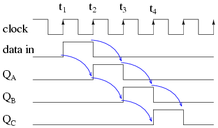
A la hora del reloj t1un "dato en" de0está cronometrado desdeD to Qde las tres etapas. En particular,Dde escenarioAve una lógica0, que está sincronizado con QAdonde permanece hasta el momento t2.
A la hora del reloj t2un "dato en" de1está cronometrado desdeDa QA. En etapasB y C, a 0, alimentado desde etapas anteriores se sincroniza a QBy qC.
A la hora del reloj t3un "dato en" de0está cronometrado desdeDa QA. QAbaja y permanece baja durante los relojes restantes debido a que se están ingresando "datos".0. QBsube en t3debido a un1de la etapa anterior. qCsigue siendo bajo después de t3debido a una baja de la etapa anterior.
QCfinalmente sube alto en el reloj t4debido a la alta alimentación aDde la etapa anterior QB. Todas las etapas anteriores tienen0Se ha trasladado a ellos. Y, después del siguiente pulso de reloj en t5, toda lógica1s habrá sido desplazado, reemplazado por0s
Dispositivos de entrada/salida serie
Examinaremos más de cerca las siguientes piezas disponibles como circuitos integrados, cortesía de Texas Instruments. Para obtener hojas de datos completas del dispositivo, siga los enlaces.
- CD4006b Registro de desplazamiento de entrada/salida serie de 18 bits
- CD4031b Registro de desplazamiento de entrada/salida serie de 64 bits
- Registro de desplazamiento de entrada/salida serie dual CD4517b de 64 bits
Los siguientes registros de desplazamiento de entrada y salida en serie son de la serie 4000.CMOS(Semiconductores complementarios de óxido metálico). Como tal, aceptarán una V.DD, fuente de alimentación positiva de 3 voltios a 15 voltios. la vSSel pin está conectado a tierra. La frecuencia máxima del reloj de turno, que varía con VDD, son unos pocos megahercios. Consulte la hoja de datos completa para obtener más detalles.
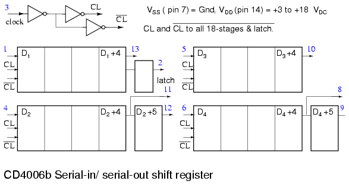
El CD4006b de 18 bits consta de dos etapas de 4 bits y dos etapas más de 5 bits con una derivación de salida de 4 bits. Por tanto, las etapas de 5 bits podrían usarse como registros de desplazamiento de 4 bits. Para obtener un registro de desplazamiento completo de 18 bits, la salida de un registro de desplazamiento debe conectarse en cascada a la entrada de otro y así sucesivamente hasta que todas las etapas creen un único registro de desplazamiento como se muestra a continuación.
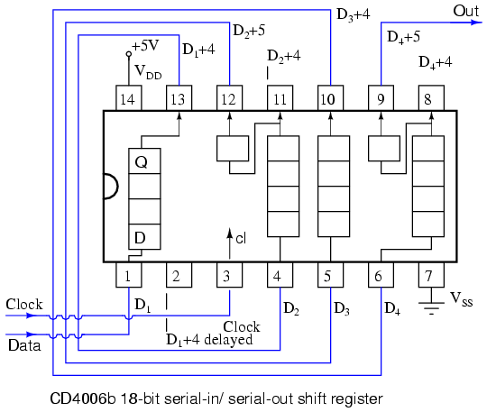
A continuación se muestra un registro de desplazamiento de entrada/salida serie CD4031 de 64 bits. Varios pines no están conectados (nc). Tanto Q como Q' están disponibles a partir de la etapa 64, en realidad Q64y Q'64. También hay una Q64"retrasado" de una media etapa que se retrasa medio ciclo de reloj. Una característica importante es un selector de datos que se encuentra en la entrada de datos al registro de desplazamiento.
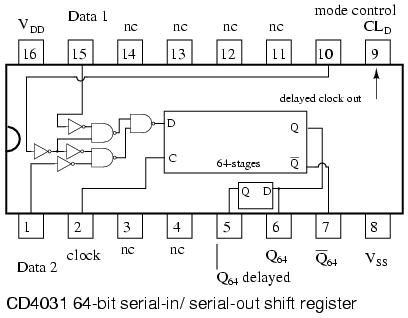
El "control de modo" selecciona entre dos entradas: datos 1 y datos 2. Si el "control de modo" es alto, los datos se seleccionarán de los "datos 2" para ingresarlos al registro de desplazamiento. En el caso de que el "control de modo" sea lógico bajo, se selecciona el "dato 1". Ejemplos de esto se muestran en las dos figuras siguientes.
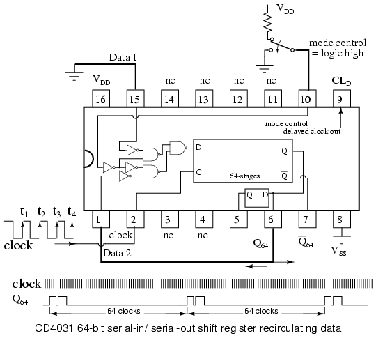
Los "datos 2" anteriores están conectados al Q64salida del registro de desplazamiento. Con el "control de modo" alto, la Q64La salida se enruta de regreso a la entrada de datos de la palanca de cambios D. Los datos serecirculardesde la salida hasta la entrada. Los datos se repetirán cada 64 pulsos de reloj como se muestra arriba. La pregunta que surge es ¿cómo llegó este patrón de datos al registro de desplazamiento en primer lugar?
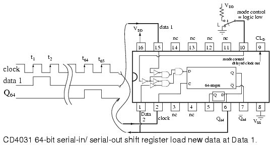
Con el "control de modo" bajo, se selecciona el "dato 1" del CD4031 para ingresarlo a la palanca de cambios. La salida, Q64, no se recircula porque la puerta selectora de datos inferior estádesactivado. Por deshabilitado queremos decir que la "selección de modo" lógica baja invertida dos veces a un nivel bajo en la puerta NAND inferior impide que pase cualquier señal en el pin inferior (datos 2) a la salida de la puerta. Por tanto, queda inhabilitado.
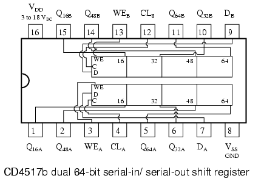
Arriba se muestra un registro de desplazamiento dual CD4517b de 64 bits. Tenga en cuenta los grifos en las etapas 16, 32 y 48. Eso significa que los registros de desplazamiento de esas longitudes se pueden configurar desde uno de los desplazadores de 64 bits. Por supuesto, los desplazadores de 64 bits se pueden conectar en cascada para producir un registro de desplazamiento de 80, 96, 112 o 128 bits. El reloj CLAy CLBdeben estar en paralelo al conectar en cascada las dos palancas de cambio. NOSOTROSBy NOSOTROSBestán conectados a tierra para operaciones de cambio normales. Las entradas de datos a los registros de desplazamiento A y B son DAy DBrespectivamente.
Supongamos que necesitamos un registro de desplazamiento de 16 bits. ¿Se puede configurar esto con el CD4517b? ¿Qué tal un registro de 64 turnos de la misma pieza?
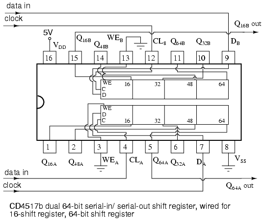
Arriba mostramos un CD4517b conectado como un registro de desplazamiento de 16 bits para la sección B. El reloj para la sección B es CLB. Los datos están registrados en CL.B. Y los datos con un retraso de 16 relojes se extraen de Q16B. NOSOTROSB, la habilitación de escritura, está conectada a tierra.
Arriba también mostramos el mismo CD4517b conectado como un registro de desplazamiento de 64 bits para la sección independiente A. El reloj para la sección A es CLA. Los datos entran en CLA. Los datos retrasados por pulsos de 64 relojes se recogen de Q64A. NOSOTROSA, la habilitación de escritura para la sección A, está conectada a tierra.
Registro de desplazamiento de entrada paralela y salida serie
Los registros de desplazamiento de entrada/salida en serie hacen todo lo que hacen los registros de desplazamiento de entrada/salida en serie anteriores además de introducir datos en todas las etapas simultáneamente. El registro de desplazamiento de entrada/salida en paralelo almacena datos, los desplaza reloj por reloj y los retrasa según el número de etapas multiplicadas por el período del reloj. Además, la entrada/salida en paralelo realmente significa que podemos cargar datos en paralelo en todas las etapas antes de que comience cualquier cambio. Esta es una manera de convertir datos de unparaleloformato a unde serieformato. Por formato paralelo queremos decir que los bits de datos están presentes simultáneamente en cables individuales, uno para cada bit de datos, como se muestra a continuación. Por formato en serie queremos decir que los bits de datos se presentan secuencialmente en el tiempo en un solo cable o circuito como en el caso de la "salida de datos" en el diagrama de bloques a continuación.
A continuación, analizamos de cerca los detalles internos de un registro de desplazamiento de entrada/salida en paralelo de 3 etapas. Una etapa consta de un tipoDFlip-Flop para almacenamiento y un selector AND-OR para determinar si los datos se cargarán en paralelo o se desplazarán los datos almacenados hacia la derecha. En general, estos elementos se replicarán para el número de etapas requeridas. Mostramos tres etapas debido a limitaciones de espacio. Cuatro, ocho o dieciséis bits son normales para piezas reales.
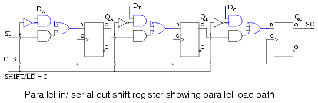
Arriba mostramos la ruta de carga paralela cuando SHIFT/LD' tiene una lógica baja. Las puertas NAND superiores que sirven a DA DB DCestán habilitados, pasando datos a las entradas D de tipoDChanclas QA QB DCrespectivamente. En el siguiente flanco positivo del reloj, los datos se sincronizarán de D a Q de los tres FF. Se cargarán tres bits de datos en QA QB DCal mismo tiempo.
El tipo de carga paralela que se acaba de describir, donde las cargas de datos en un pulso de reloj se conoce comocarga sincrónicaporque la carga de datos está sincronizada con el reloj. Esto debe diferenciarse decarga asíncronadonde la carga se controla mediante los pines preestablecidos y transparentes de los Flip-Flops que no requieren el reloj. Sólo uno de estos métodos de carga se utiliza dentro de un dispositivo individual, siendo la carga síncrona más común en los dispositivos más nuevos.
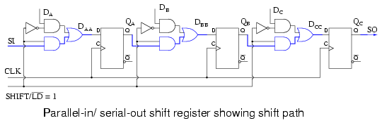
La ruta de cambio se muestra arriba cuando SHIFT/LD' tiene una lógica alta. Las puertas AND inferiores de los pares que alimentan la puerta OR están habilitadas, lo que nos proporciona una conexión de registro de desplazamiento de SI a DA , QAa DB , QBa DC , QCa SO. Los pulsos del reloj harán que los datos se desplacen hacia la derecha a SO en pulsos sucesivos.
Las formas de onda siguientes muestran tanto la carga paralela de tres bits de datos como el desplazamiento en serie de estos datos. Datos paralelos en DA DB DCse convierte a datos en serie en SO.
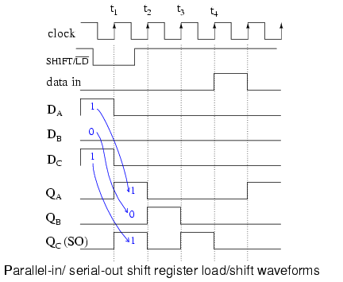
Lo que describimos anteriormente con palabras para carga y desplazamiento paralelos ahora se establece como formas de onda arriba. Como ejemplo presentamos101a las entradas paralelas DAA DBB DCC. A continuación, SHIFT/LD' baja, lo que permite cargar datos en lugar de cambiarlos. Debe estar bajo un breve periodo de tiempo antes y después del pulso del reloj debido a los requisitos de configuración y retención. Es considerablemente más ancho de lo necesario. Sin embargo, con lógica síncrona es conveniente hacerlo amplio. Podríamos haber hecho el activo bajo SHIFT/LD con casi dos relojes de ancho, bajo casi un reloj antes de t.1y de regreso alto justo antes de t3. El factor importante es que debe ser bajo las 24 horas del día.1para permitir la carga paralela de los datos mediante el reloj.
Tenga en cuenta que en t1los datos101en DA DB DCestá sincronizado de D a Q de los Flip-Flops como se muestra en QA QB QCen el momento t1. Esta es la carga paralela de los datos sincrónica con el reloj.
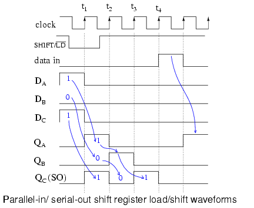
Ahora que los datos están cargados, podemos cambiarlos siempre que SHIFT/LD' esté alto para permitir el cambio, que es antes de t2. en t2los datos0en QCse desplaza fuera de SO, que es lo mismo que QCforma de onda. O se cambia a otro circuito integrado o se pierde si no hay nada conectado a SO. Los datos en QB, a 0se desplaza a QC. El1en QAse desplaza a QB. Con "datos en" un0, QAse convierte0. Después de t2, QA QB QC = 010.
Después de t3, QA QB QC = 001. Este1, que estaba originalmente presente en QAdespués de t1, ahora está presente en SO y QC. El último bit de datos se transfiere a un circuito integrado externo, si existe. Después de t4Todos los datos de la carga paralela han desaparecido. En el reloj t5mostramos el desplazamiento de un dato1presente en el SI, entrada serie.
¿Por qué proporcionar pines SI y SO en un registro de desplazamiento? Estas conexiones nos permiten conectar en cascada etapas de registro de cambios para proporcionar cambios más grandes que los disponibles en un solo paquete IC (circuito integrado). También permiten conexiones en serie hacia y desde otros circuitos integrados, como microprocesadores.
Dispositivos de entrada paralela/salida serie
Echemos un vistazo más de cerca a los registros de desplazamiento de entrada/salida en paralelo disponibles como circuitos integrados, cortesía de Texas Instruments. Para obtener hojas de datos completas del dispositivo, siga estos enlaces.
- SN74ALS166 registro de desplazamiento de 8 bits de entrada/salida en paralelo, carga síncrona
- SN74ALS165 registro de desplazamiento de 8 bits de entrada/salida en paralelo, carga asíncrona
- Registro de desplazamiento de 8 bits de entrada paralela/salida serie CD4014B, carga síncrona
- SN74LS647 registro de desplazamiento de 16 bits de entrada/salida en paralelo, carga síncrona
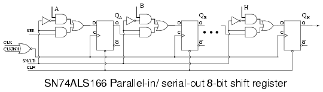
El SN74ALS166 que se muestra arriba es la coincidencia más cercana de una pieza real con las figuras anteriores de la palanca de cambios de entrada/salida en paralelo. Observemos los cambios menores en nuestra figura anterior. En primer lugar, hay 8 etapas. Sólo mostramos tres. Las 8 etapas se muestran en la hoja de datos disponible en el enlace de arriba. El fabricante etiqueta las entradas de datos A, B, C, etc. en H. El control SHIFT/LOAD se llama SH/LD'. Es una abreviatura de nuestra terminología anterior, pero funciona igual: carga paralela si es baja, cambio si es alta. La entrada de cambio (entrada de datos en serie) es SER en el ALS166 en lugar de SI. El reloj CLK está controlado por una señal de inhibición, CLKINH. Si CLKINH es alto, el reloj se inhibe o se desactiva. Por lo demás, esta "parte real" es la misma que hemos visto en detalle.
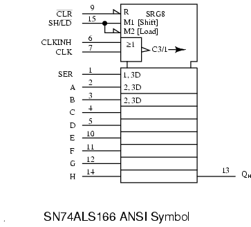
Arriba está el símbolo ANSI (Instituto Nacional Estadounidense de Estándares) para el SN74ALS166 como se proporciona en la hoja de datos. Una vez que sabemos cómo funciona la pieza, es conveniente ocultar los detalles dentro de un símbolo. Hay muchas formas generales de símbolos. La ventaja del símbolo ANSI es que las etiquetas brindan pistas sobre cómo funciona la pieza.
El gran bloque con muescas en la parte superior del '74ASL166 es la sección de control del símbolo ANSI. Hay un reinicio indicado porR. Hay tres señales de control:M1(Cambio),M2 (Cargar), yC3/1 (flecha)(reloj inhibido). El reloj tiene dos funciones. Primero,C3para cambiar datos paralelos dondequiera que haya un prefijo de3 appears. Second, whenever M1se afirma, tal y como indica el1 of C3/1 (flecha), los datos se desplazan como lo indica la flecha que apunta hacia la derecha. La barra diagonal (/) es un separador entre estas dos funciones. Las etapas de 8 turnos, como lo indica el título.SRG8, se identifican por las entradas externasA, B, C, to H. el interno2, 3Dindica que los datos,D, está controlado porM2[Cargar] yC3reloj. En este caso, podemos concluir que los datos paralelos se cargan sincrónicamente con el reloj.C3. La etapa superior enAEs un bloque más ancho que los demás para acomodar la entrada.SER. la leyenda1, 3Dimplica queSERestá controlado porM1[Mayús] yC3reloj. Por lo tanto, esperamos registrar datos enSERal realizar cambios en comparación con la carga paralela.
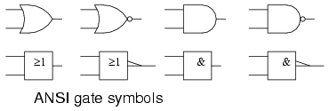
La puerta básica ANSI/IEEEsímbolos rectangularesse proporcionan arriba para compararlos con los más familiaressímbolos de formapara que podamos descifrar el significado de la simbología asociada alCLÍNManoCLKpines en el símbolo ANSI SN74ALS166 anterior. ElCLKy CLKINH alimentan unORpuerta en el símbolo ANSI SN74ALS166.ORestá indicado por=>en el símbolo insertado rectangular. El triángulo largo en la salida indica un reloj. Si hubiera una burbuja con la flecha, esto habría indicado un cambio en el borde negativo del reloj (de mayor a menor). Como no hay ninguna burbuja con la flecha del reloj, el registro se desplaza en el borde positivo (transición de bajo a alto) del reloj. La flecha larga, tras la leyendaC3/1apuntar hacia la derecha indica desplazamiento hacia la derecha, que está hacia abajo en el símbolo.
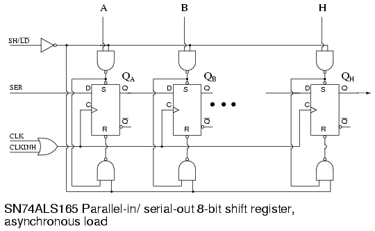
Parte de la lógica interna del registro de desplazamiento de carga asíncrono de entrada paralela/salida serie SN74ALS165 se reproduce de la hoja de datos anterior. Consulte el enlace al principio de esta sección para ver el diagrama completo. Hasta este momento no hemos analizado la carga asincrónica de datos. En primer lugar, la carga se logra mediante la aplicación de señales apropiadas alSet(preestablecido) yReiniciar(borrar) las entradas de los Flip-Flops. la parte superiorNANDLas puertas alimentan elSetpines de los FF y también cae en cascada hacia la parte inferiorNANDpuerta que alimenta elReiniciarpines de los FF. el inferiorNANDLa puerta invierte la señal al pasar delSetfijar alReiniciaralfiler.
Primero,SH/LD'debe ser tiradoLowpara habilitar la parte superior e inferiorNANDpuertas. SiSH/LD'estaban en una lógicaaltoen cambio, el inversor alimenta una lógicalowa todosNANDLas puertas obligarían aAltoafuera, liberando el "bajo activo"Set y Reiniciarpines de todos los FF. No habría posibilidad de cargar los FF.
ConSH/LD'sostuvoLow, podemos alimentar, por ejemplo, un dato1a entrada paralelaA, que se invierte a cero en la parte superiorNANDsalida de puerta, ajuste FF QAa un1. El0alSetel pasador se alimenta a la parte inferiorNANDpuerta donde se invierte a una1, liberando elReiniciaralfiler deQA. Así, un datoA=1conjuntosQA=1. Como nada de esto requería el reloj, la carga es asíncrona con respecto al reloj. Usamos un registro de desplazamiento de carga asíncrono si no podemos esperar a que un reloj cargue datos en paralelo, o si es inconveniente generar un solo pulso de reloj.
La única diferencia al alimentar datos.0a entrada paralelaAes que se invierte a un1fuera de la puerta superior soltandoSet. Este1 at Setse invierte a un0en la puerta inferior, tirandoReiniciara unLow, que se reiniciaQA=0.
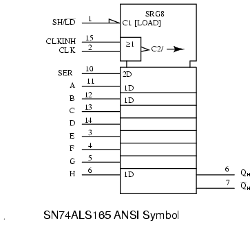
El símbolo ANSI para el SN74ALS166 anterior tiene dos controles internosC1[CARGAR] yC2reloj de laORfunción de (CLKINH, CLK). SRG8dice palanca de cambios de 8 etapas. La flecha despuésC2indica cambio hacia la derecha o hacia abajo.SERLa entrada es una función del reloj como lo indica la etiqueta interna.2D. Las entradas de datos paralelasA, B, C to Hson una función deC1[CARGAR], indicado por la etiqueta interna1D. C1se afirma cuandosh/LD' =0debido al inversor de media flecha en la entrada. Compare esto con el control de las entradas de datos en paralelo mediante el reloj del anterior ANSI SN75ALS166 síncrono. Tenga en cuenta las diferencias en las etiquetas de datos ANSI.
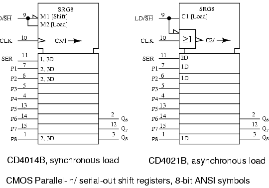
En el CD4014B anterior,M1se afirma cuandoLD/SH'=0. M2se afirma cuandoLD/SH'=1. RelojC3/1se utiliza para cargar datos en paralelo en2, 3DcuandoM2está activo como lo indica el2,3etiquetas de prefijo. PatasP3 to P7se entiende que tienen el mismo interior2,3etiquetas de prefijo comoP2 y P8. EnSER, el1,3Dprefijo implica queM1y relojC3son necesarios para ingresar datos en serie. El cambio a la derecha tiene lugar cuando M1 activo es como lo indica el1 in C3/1 flecha.
El CD4021B es una pieza similar excepto por la carga paralela asíncrona de datos, como lo implica la falta de cualquier2prefijo en la etiqueta de datos1Dpara los pines P1, P2 a P8. Por supuesto, prefijo2en etiqueta2Den la entradaSERdice que los datos se registran en este pin. ElOREl recuadro de la puerta muestra que el reloj está controlado porLD/SH'.
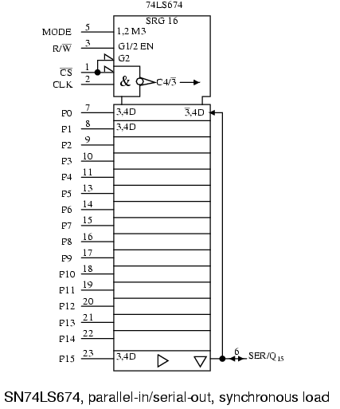
La etiqueta interna SN74LS674 anteriorSRG 16indica registro de desplazamiento de 16 bits. ElMODOLa entrada a la sección de control en la parte superior del símbolo está etiquetada1,2 M3. InternoM3es una función de la entradaMODO y G1 y G2como lo indica el1,2anteriorM3. La etiqueta baseGindica unANDfunción de cualquier talGentradas. AporteL/E'está etiquetado internamenteG1/2 ES. Esta es una habilitaciónEN(controlado porG1 Y G2) para dispositivos triestados utilizados en otras partes del símbolo. Notamos queCS'encendido (pin 1) es internoG2. selección de chipsCS'también lo esANDed con la entradaCLKpara dar reloj internoC4. La burbuja dentro de la flecha del reloj indica que la actividad se encuentra en el borde negativo (transición de mayor a menor) del reloj. La barra diagonal (/) es un separador que implica dos funciones para el reloj. Antes del corte,C4indica control de cualquier cosa con un prefijo de4. Después del corte, el3' (arrow)indica cambio. El3' of C4/3'implica cambiar cuando M3 no se afirma (MODE=0). La flecha larga indica desplazamiento hacia la derecha (abajo).
Bajando por debajo de la sección de control a la sección de datos, tenemos entradas externasP0-P15, pines (7-11, 13-23). el prefijo3,4de etiqueta interna3,4Dindica queM3y el relojC4controlar la carga de datos paralelos. ElDsignifica Datos. Se supone que esta etiqueta se aplica a todas las entradas paralelas, aunque no está escrita explícitamente. Localiza la etiqueta3',4Da la derecha delP0(pin7) etapa. El complementado-3indica queM3=MODE=0entradas (turnos)SER/Q15(pin5) a la hora del reloj, (4de 3',4D) correspondiente al relojC4. En otras palabras, conMODE=0, cambiamos los datos aQ0desde la entrada serie (pin 6). Todas las demás etapas se desplazan hacia la derecha (hacia abajo) a la hora del reloj.
Moviéndose a la parte inferior del símbolo, el triángulo que apunta hacia la derecha indica un búfer entreQy el pin de salida. El Triángulo apuntando hacia abajo indica un dispositivo de tres estados. Anteriormente dijimos que el trieste está controlado por enableEN, que en realidad esG1 Y G2desde la sección de control. SiL/E=0, el triestado está deshabilitado y podemos transferir datos aQ0 via SER(pin 6), un detalle que omitimos arriba. realmente necesitamosMODE=0, R/W'=0, CS'=0
La lógica interna del SN74LS674 y una tabla que resume el funcionamiento de las señales de control están disponibles en el enlace de la lista de viñetas, en la parte superior de la sección.
If L/E'=1, el triestado está habilitado,Q15se desplazaSER/Q15(pin 6) y recircula alQ0etapa a través del cable derecho para3',4D. Hemos asumido que CS' estaba bajo, lo que nos da el reloj C4/3' y G2 paraENcapaz de los tres estados.
Practical applications
Una aplicación de un registro de desplazamiento de entrada/salida en paralelo es leer datos en un microprocesador.
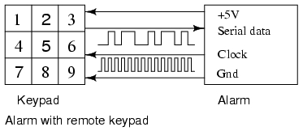
La alarma anterior está controlada por un teclado remoto. La caja de alarma suministra +5V y tierra al teclado remoto para alimentarlo. La alarma lee el teclado remoto cada pocas decenas de milisegundos enviando relojes de turno al teclado que devuelve datos en serie que muestran el estado de las teclas a través de un registro de turno de entrada/salida en paralelo. Así, leemos nueve interruptores de llave con cuatro cables. ¿Cuántos cables se necesitarían si tuviéramos que ejecutar un circuito para cada una de las nueve teclas?
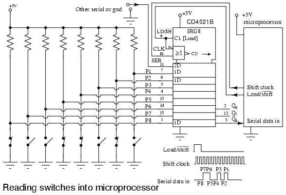
Una aplicación práctica de un registro de desplazamiento de entrada/salida en paralelo es leer muchos cierres de interruptores en un microprocesador con sólo unos pocos pines. Algunos microprocesadores de gama baja sólo tienen 6 pines de E/S (entrada/salida) disponibles en un paquete de 8 pines. O es posible que hayamos utilizado la mayoría de los pines en un paquete de 84 pines. Es posible que deseemos reducir la cantidad de cables que circulan alrededor de una placa de circuito, máquina, vehículo o edificio. Esto aumentará la confiabilidad de nuestro sistema. Se ha informado que los fabricantes que han reducido el número de cables en un automóvil producen un producto más confiable. En cualquier caso, sólo se necesitan tres pines del microprocesador para leer 8 bits de datos de los interruptores de la figura anterior.
Hemos elegido un dispositivo de carga asíncrono, el CD4021B porque es más fácil controlar la carga de datos sin tener que generar un único reloj de carga paralelo. Las entradas de datos paralelas del registro de desplazamiento se elevan a +5 V con una resistencia en cada entrada. Si todos los interruptores están abiertos, todos1s se cargarán en el registro de desplazamiento cuando el microprocesador mueva elLD/SH'línea de menor a mayor, luego retroceda en previsión del cambio. Cualquier cierre de interruptor aplicará la lógica.0s a las correspondientes entradas paralelas. El patrón de datos en P1-P7 será cargado en paralelo por elLD/SH'=1generado por el software del microprocesador.
El microprocesador genera pulsos de cambio y lee un bit de datos para cada uno de los 8 bits. Este proceso se puede realizar totalmente con software, o microprocesadores más grandes pueden tener una o más interfaces seriales para realizar la tarea más rápidamente con hardware. ConLD/SH'=0, el microprocesador genera una0 to 1transición en elLínea de reloj de turno, luego lee un bit de datos en eldatos seriales enlínea. Esto se repite para todos los 8 bits.
The SERLa línea del registro de desplazamiento puede ser impulsada por otro circuito CD4021B idéntico si es necesario leer más contactos del interruptor. En cuyo caso, el microprocesador genera pulsos de 16 cambios. Lo más probable es que sea impulsado por algo más compatible con este formato de datos en serie, por ejemplo, un convertidor analógico a digital, un sensor de temperatura, un escáner de teclado, una memoria en serie de sólo lectura. En cuanto a los cierres de interruptor, pueden ser finales de carrera en el carro de una máquina, un sensor de sobretemperatura, un interruptor de láminas magnético, un interruptor de puerta o ventana, un presostato de aire o agua, o un interruptor óptico de estado sólido.
Registro de desplazamiento de entrada serie y salida paralela
Un registro de desplazamiento de entrada/salida en serie es similar al registro de desplazamiento de entrada/salida en serie en el sentido de que desplaza los datos a elementos de almacenamiento internos y los desplaza en el pin de salida y salida de datos. Se diferencia en que hace que todas las etapas internas estén disponibles como salidas. Por lo tanto, un registro de desplazamiento de entrada en serie/salida en paralelo convierte datos del formato en serie al formato paralelo. Si cuatro bits de datos se desplazan mediante cuatro pulsos de reloj a través de un solo cable en la entrada de datos, a continuación, los datos estarán disponibles simultáneamente en las cuatro salidas QAa QDdespués del cuarto pulso de reloj.
La aplicación práctica del registro de desplazamiento de entrada en serie/salida en paralelo es convertir datos del formato en serie en un solo cable al formato paralelo en varios cables. Quizás, iluminaremos cuatro LED (Diodos emisores de luz) con las cuatro salidas (QA QB QC QD ).
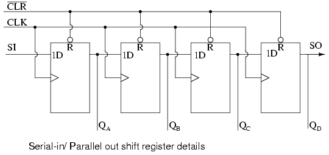
Los detalles anteriores del registro de desplazamiento de entrada en serie/salida en paralelo son bastante simples. Parece un registro de desplazamiento de entrada y salida en serie con derivaciones agregadas a cada salida de etapa. Los datos en serie cambian aSI(Entrada serie). Después de un número de relojes igual al número de etapas, el primer bit de datos aparece en SO (QD) en la figura anterior. En general, no hay pin SO. La última etapa (QDarriba) sirve como SO y se conecta en cascada al siguiente paquete si existe.
Si un registro de desplazamiento de entrada/salida en serie es tan similar a un registro de desplazamiento de entrada/salida en serie, ¿por qué los fabricantes se molestan en ofrecer ambos tipos? ¿Por qué no ofrecer simplemente el registro de desplazamiento de entrada en serie/salida en paralelo? En realidad, solo ofrecen el registro de desplazamiento de entrada en serie/salida en paralelo, siempre que no tenga más de 8 bits. Tenga en cuenta que los registros de desplazamiento de entrada y salida en serie vienen en longitudes superiores a 8 bits, de 18 a 64 bits. No es práctico ofrecer un registro de desplazamiento de entrada/salida en serie de 64 bits que requiera tantos pines de salida. Consulte las formas de onda a continuación para conocer el registro de desplazamiento anterior.
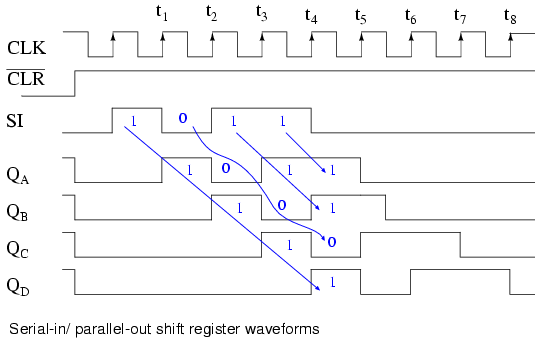
El registro de turnos ha sido borrado antes de cualquier dato porCLR', una señal baja activa, que borra todos los Flip-Flops tipo D dentro del registro de desplazamiento. Tenga en cuenta los datos de serie1011patrón presentado en elSIaporte. Estos datos se sincronizan con el reloj.CLK. Este sería el caso si se está desplazando desde algo así como otro registro de desplazamiento, por ejemplo, un registro de desplazamiento de entrada/salida en paralelo (no se muestra aquí). En el primer reloj a last1, los datos1 at SIse desplaza deD to Qde la primera etapa de registro de desplazamiento. Despuést2este primer bit de datos está enQB. Despuést3esta enQC. Despuést4esta enQD. Cuatro pulsos de reloj han desplazado el primer bit de datos hasta la última etapaQD. El segundo bit de datos un0esta enQCdespués del cuarto reloj. El tercer bit de datos1esta enQB. El cuarto dato mordió a otro.1esta enQA. Por tanto, el patrón de entrada de datos en serie1011está contenido en (QD QC QB QA). Ahora está disponible en las cuatro salidas.
Estará disponible en las cuatro salidas justo después del reloj.t4justo antest5. Estos datos paralelos deben usarse o almacenarse entre estos dos momentos, o se perderán debido al cambio de QDetapa en los siguientes relojest5 to t8como se muestra arriba.
Dispositivos de entrada serie/salida paralela
Echemos un vistazo más de cerca a los registros de desplazamiento de entrada serie/salida paralelo disponibles como circuitos integrados, cortesía de Texas Instruments. Para obtener hojas de datos completas del dispositivo, siga los enlaces.
- Registro de desplazamiento de 8 bits de entrada serie/salida paralela SN74ALS164A
- Registro de desplazamiento de 8 bits de entrada serie/salida paralela SN74AHC594 con registro de salida
- Registro de desplazamiento de 8 bits de entrada serie/salida paralela SN74AHC595 con registro de salida
- Registro de desplazamiento de 8 bits de entrada serie/salida paralela CD4094 con registro de salida
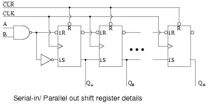
El 74ALS164A es casi idéntico a nuestro diagrama anterior con la excepción de las dos entradas en serie.A y B. La entrada no utilizada debe elevarse para habilitar la otra entrada. No mostramos todas las etapas anteriores. Sin embargo, todas las salidas se muestran en el símbolo ANSI a continuación, junto con los números de pin.
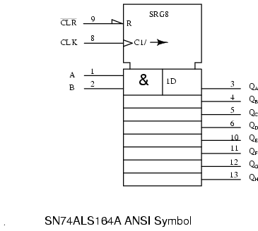
The CLKLa entrada a la sección de control del símbolo ANSI anterior tiene dos funciones internas.C1, control de cualquier cosa con un prefijo de1. Esto sería registrar datos en1D. La segunda función, la flecha después de la barra (/), es el desplazamiento hacia la derecha (hacia abajo) de los datos dentro del registro de desplazamiento. Las ocho salidas están disponibles a la derecha de los ocho registros debajo de la sección de control. La primera etapa es más ancha que las demás para acomodar elA&Baporte.
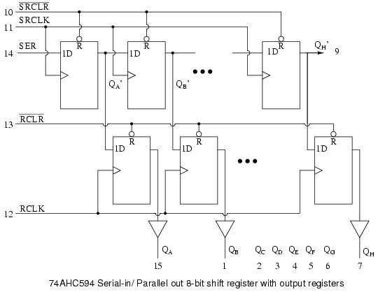
El diagrama lógico interno anterior está adaptado de la hoja de datos de TI (Texas Instruments) para el 74AHC594. Los FF tipo "D" en la fila superior comprenden un registro de desplazamiento de entrada en serie/salida en paralelo. Esta sección funciona como los dispositivos descritos anteriormente. Las salidas (QA' QB' to QH' ) de la mitad del registro de desplazamiento del dispositivo alimentan los FF tipo "D" en la mitad inferior en paralelo.QH'(pin 9) se desplaza a cualquier paquete de dispositivo en cascada opcional.
Un único flanco positivo del reloj en RCLK transferirá los datos desde D to Qde los FF inferiores. Todos los 8 bits se transfieren en paralelo a la salida.registro(una colección de elementos de almacenamiento). El propósito del registro de salida es mantener una salida de datos constante mientras se transfieren nuevos datos a la sección superior del registro de desplazamiento. Esto es necesario si las salidas controlan relés, válvulas, motores, solenoides, bocinas o zumbadores. Es posible que esta característica no sea necesaria cuando se conducen LED, siempre y cuando el parpadeo durante el cambio no sea un problema.
Tenga en cuenta que el 74AHC594 tiene relojes separados para el registro de desplazamiento (SRCLK) y el registro de salida (RCLK). Además, la palanca de cambios puede borrarseSRCLRy, el registro de salida porRCLR. Es deseable poner las salidas en un estado conocido al momento del encendido, en particular, si se activan relés, motores, etc. Las formas de onda a continuación ilustran el cambio y el enganche de datos.
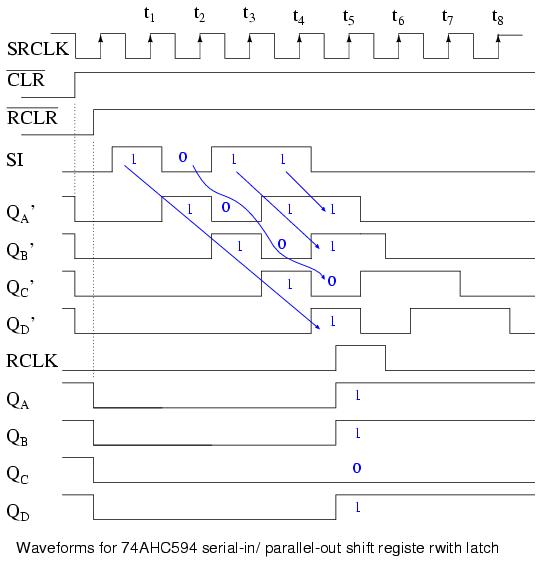
Las formas de onda anteriores muestran el desplazamiento de 4 bits de datos a las primeras cuatro etapas del 74AHC594 y luego la transferencia paralela al registro de salida. De hecho, el 74AHC594 es un registro de desplazamiento de 8 bits y se necesitarían 8 relojes para desplazar 8 bits de datos, que sería el modo normal de operación. Sin embargo, los 4 bits que mostramos ahorran espacio e ilustran adecuadamente el funcionamiento.
Limpiamos el registro de turnos medio reloj antes det0conSRCLR'=0. SRCLR'debe soltarse hacia arriba antes de realizar el cambio. Justo antes det0el registro de salida se borra medianteRCLR'=0. También se publica (RCLR'=1).
datos seriales1011se presenta en el pin SI entre relojest0 y t4. Se cambia por relojes.t1 t2 t3 t4Apareciendo en etapas de cambio interno.QA' QB' QC' QD' . Estos datos están presentes en estas etapas entret4 y t5. Despuést5los datos deseados (1011) no estará disponible en estas etapas de cambio internas.
Entret4 y t5aplicamos una actitud positivaRCLKtransfiriendo datos1011para registrar salidasQA QB QC QD . Estos datos se congelarán aquí a medida que haya más datos (0s) cambia durante el siguienteSRCLKs (t5 to t8). No habrá ningún cambio en los datos aquí hasta otroRCLKse aplica.
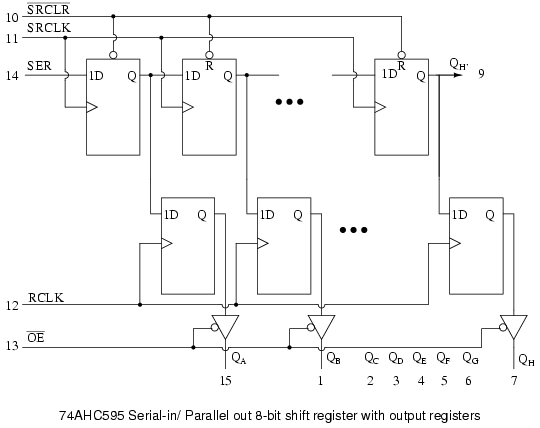
El 74AHC595 es idéntico al '594 excepto que elRCLR'es reemplazado por unOE'habilitar un buffer de tres estados en la salida de cada uno de los ocho bits del registro de salida. Aunque el registro de salida no se puede borrar, las salidas se pueden desconectarOE'=1. Esto permitiría que las resistencias pull-up o pull-down externas fuercen cualquier controlador de relé, solenoide o válvula a un estado conocido durante el encendido del sistema. Una vez que el sistema está encendido y, digamos, un microprocesador ha cambiado y bloqueado los datos en el '595, se podría afirmar la habilitación de salida (OE'=0) para accionar los relés, solenoides y válvulas con datos válidos, pero no antes de ese tiempo.
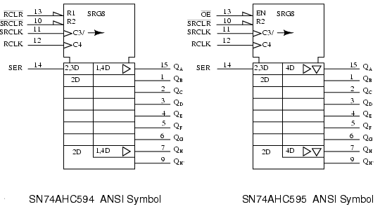
Arriba están los símbolos ANSI propuestos para estos dispositivos.C3registra los datos en la entrada serie (externaSER) como lo indica el3prefijo de2,3D. La flecha despuésC3/indica un cambio a la derecha (abajo) del registro de cambios, las 8 etapas a la izquierda del símbolo '595 debajo de la sección de control. El2prefijo de2,3D y 2Dindica que estas etapas se pueden restablecerR2(externoSRCLR').
The 1prefijo de1,4Den el'594indica queR1(externoRCLR') puede restablecer el registro de salida, que está a la derecha de la sección del registro de desplazamiento. El'595, que tiene unENen externoOE'No se puede restablecer el registro de salida. Pero, elENhabilita los buffers de salida de tres estados (triángulo invertido). El triángulo que apunta hacia la derecha de ambos'594 y'595indica almacenamiento en búfer interno. Tanto el'594 y'595Los registros de salida son sincronizados por C4 como lo indica4 of 1,4D y 4Drespectivamente.
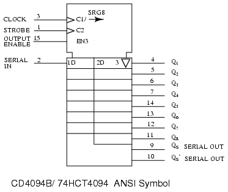
El CD4094B es de 3 a 15VDCAlternativa de registro de desplazamiento con enclavamiento capaz a los dispositivos 74AHC594 anteriores.RELOJ, C1, shifts data in at SERIE ENcomo lo implica el1prefijo de1D. También es el reloj del registro de desplazamiento derecho (mitad izquierda del cuerpo del símbolo) como lo indica el /(flecha derecha) deC1/(flecha) en elRELOJaporte.
ESTROBOSCÓPICO, C2es el reloj del registro de salida de 8 bits a la derecha del cuerpo del símbolo. El2 of 2Dindica queC2es el reloj del registro de salida. El triángulo invertido en el pestillo de salida indica que la salida está triestada, siendo habilitada porEN3. El3precede al triángulo invertido y al3 of EN3a menudo se omiten, ya que cualquier habilitación (EN) se entiende que controla las salidas de los tres estados.
QS y QS'son salidas no enclavadas de la etapa del registro de desplazamiento.QSpodría conectarse en cascada aSERIE ENde un dispositivo posterior.
Practical applications
Una aplicación en el mundo real del registro de desplazamiento de entrada en serie/salida en paralelo es enviar datos desde un microprocesador a un indicador de panel remoto. U otro dispositivo de salida remoto que acepte datos en formato serie.
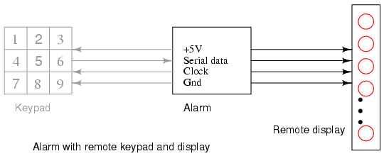
La figura "Alarma con teclado remoto" se repite aquí desde la sección de entrada/salida en paralelo con la adición de la pantalla remota. Así, podemos visualizar, por ejemplo, el estado de los bucles de alarma conectados a la caja de alarma principal. Si la alarma detecta una ventana abierta, puede enviar datos en serie a la pantalla remota para informarnos. Es probable que tanto el teclado como la pantalla estén contenidos dentro del mismo gabinete remoto, separado de la caja de alarma principal. Sin embargo, en esta sección sólo veremos el panel de visualización.
Si la pantalla estuviera en el mismo tablero que la alarma, podríamos simplemente pasar ocho cables a los ocho LED junto con dos cables para alimentación y tierra. Estos ocho cables son mucho menos deseables en un recorrido largo hasta un panel remoto. Al utilizar registros de desplazamiento, solo necesitamos conectar cinco cables: reloj, datos en serie, luz estroboscópica, alimentación y tierra. Si el panel estuviera a solo unos centímetros de la placa principal, aún sería deseable reducir la cantidad de alambres en un cable de conexión para mejorar la confiabilidad. Además, a veces utilizamos la mayoría de los pines disponibles en un microprocesador y necesitamos utilizar técnicas en serie para ampliar el número de salidas. Algunos dispositivos de salida de circuitos integrados, como los convertidores digitales a analógicos, contienen registros de desplazamiento de entrada en serie y salida en paralelo para recibir datos de los microprocesadores. Las técnicas ilustradas aquí son aplicables a esas partes.
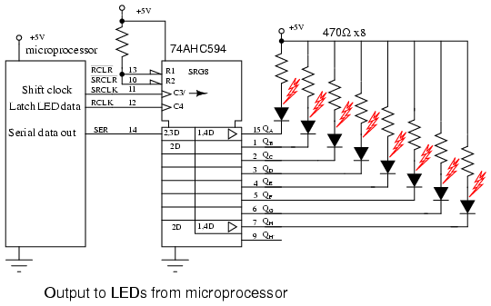
Hemos elegido el registro de desplazamiento de entrada serie/salida paralela 74AHC594 con registro de salida; sin embargo, requiere un pin adicional,RCLK, para cargar en paralelo los datos transferidos a los pines de salida. Este pin adicional evita que las salidas cambien mientras ingresan datos. Esto no es un gran problema para los LED. Pero sería un problema si accionar relés, válvulas, motores, etc.
El código ejecutado dentro del microprocesador comenzaría con 8 bits de datos para generar. Se emitiría un bit en el pin "Salida de datos en serie", lo que conduciríaSERdel mando a distancia 74AHC594. A continuación, el microprocesador genera una transición de bajo a alto en el "reloj de cambio", conduciendoSRCLKdel registro de desplazamiento '595. Este reloj positivo desplaza el bit de datos aSERde "D" a "Q" de la primera etapa del registro de desplazamiento. Esto no tiene ningún efecto sobre elQALED en este momento debido al registro de salida interno de 8 bits entre el registro de desplazamiento y los pines de salida (QA to QH). Finalmente, el microprocesador reduce el "reloj de cambio". Esto completa el cambio de un bit al '595.
El procedimiento anterior se repite siete veces más para completar el desplazamiento de 8 bits de datos del microprocesador al registro de desplazamiento de entrada serie/salida paralela 74AHC594. Para transferir los 8 bits de datos dentro del registro de desplazamiento interno '595 a la salida se requiere que el microprocesador genere una transición de bajo a alto enRCLK, el reloj del registro de salida. Esto aplica nuevos datos a los LED. ElRCLKdebe reducirse antes de la próxima transferencia de datos de 8 bits.
Los datos presentes en la salida del '595 permanecerán hasta que el proceso de los dos párrafos anteriores se repita para nuevos 8 bits de datos. En particular, se pueden transferir nuevos datos al registro de desplazamiento interno '595 sin afectar los LED. Los LED solo se actualizarán con nuevos datos con la aplicación delRCLKborde ascendente.
¿Qué pasa si necesitamos controlar más de ocho LED? Simplemente conecte en cascada otro 74AHC594SERfijar alQH'de la palanca de cambios existente. Paralelo elSRCLK y RCLKpatas. El microprocesador necesitaría transferir 16 bits de datos con 16 relojes antes de generar unRCLKalimentando ambos dispositivos.
Los indicadores LED discretos que mostramos podrían ser LED de 7 segmentos. Sin embargo, existen dispositivos LSI (integración a gran escala) capaces de controlar varios dígitos de 7 segmentos. Este dispositivo acepta datos de un microprocesador en formato serie, impulsando más segmentos de LED que pines al multiplexar los LED. Por ejemplo, consulte el enlace a continuación para MAX6955
Registro de desplazamiento universal de entrada/salida en paralelo
El propósito del registro de desplazamiento de entrada/salida en paralelo es tomar datos en paralelo, desplazarlos y luego generarlos como se muestra a continuación. Un registro de desplazamiento universal es un dispositivo que lo hace todo además de la función de entrada y salida en paralelo.
Arriba aplicamos cuatro bits de datos a un registro de desplazamiento de entrada/salida en paralelo enDA DB DC DD. El control de modo, que puede ser de múltiples entradas, controla la carga paralela frente al cambio. El control de modo también puede controlar la dirección del cambio en algunos dispositivos reales. Los datos se desplazarán una posición de bit por cada pulso de reloj. Los datos desplazados están disponibles en las salidas.QA QB QC QD . Los "datos de entrada" y "datos de salida" se proporcionan para la conexión en cascada de múltiples etapas. Aunque, arriba, solo podemos conectar datos en cascada para el desplazamiento a la derecha. Podríamos acomodar la cascada de datos de desplazamiento a la izquierda agregando un par de señales que apuntan a la izquierda, "datos de entrada" y "datos de salida", arriba.
A continuación se muestran los detalles internos de un registro de desplazamiento de entrada/salida paralelo con desplazamiento a la derecha. Los buffers de tres estados no son estrictamente necesarios para el registro de desplazamiento de entrada/salida en paralelo, pero son parte del dispositivo del mundo real que se muestra a continuación.
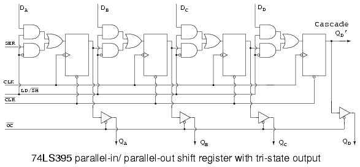
El 74LS395 se asemeja tanto a nuestro concepto de un hipotético registro de desplazamiento de entrada/salida paralelo con desplazamiento a la derecha que utilizamos una versión demasiado simplificada de los detalles de la hoja de datos anteriores. Consulte el enlace a la hoja de datos completa para obtener más detalles más adelante en este capítulo.
LD/SH'controla el multiplexor AND-OR en la entrada de datos a los FF. SiLD/SH'=1, las cuatro puertas AND superiores están habilitadas, lo que permite la aplicación de entradas paralelasDA DB DC DDa las cuatro entradas de datos FF. Observe la burbuja del inversor en la entrada del reloj de los cuatro FF. Esto indica que el 74LS395 registra datos en el reloj negativo, que es la transición de alto a bajo. Los cuatro bits de datos se sincronizarán en paralelo desdeDA DB DC DD to QA QB QC QD en el siguiente reloj negativo. En esta "parte real",OC'debe ser bajo si los datos deben estar disponibles en los pines de salida reales en lugar de solo en los FF internos.
Los datos previamente cargados pueden desplazarse a la derecha una posición de bit siLD/SH'=0para los sucesivos flancos negativos del reloj. Cuatro relojes sacarían completamente los datos de nuestro registro de desplazamiento de 4 bits. Los datos se perderían a menos que nuestro dispositivo estuviera conectado en cascada desdeQD' to SERde otro dispositivo.
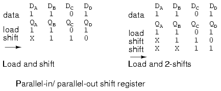
Arriba, se presenta un patrón de datos a las entradas.DA DB DC DD. El patrón se carga enQA QB QC QD . Luego se desplaza un poco hacia la derecha. Los datos entrantes se indican medianteX, es decir, no sabemos qué es. Si la entrada (SER) estuvieran fundamentados, por ejemplo, sabríamos qué datos (0) se desplazó hacia adentro. También se muestra un desplazamiento hacia la derecha en dos posiciones, lo que requiere dos relojes.
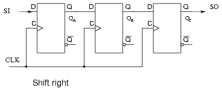
La figura anterior sirve como referencia para el hardware involucrado en el desplazamiento correcto de datos. Es demasiado simple como para molestarse siquiera en esta figura, excepto para compararla con figuras más complejas a seguir.
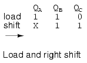
El cambio de datos hacia la derecha se proporciona arriba como referencia al cambio derecho anterior.
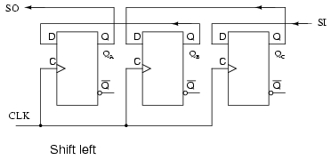
Si necesitamos desplazarnos hacia la izquierda, es necesario volver a cablear los FF. Compare con la palanca de cambios derecha anterior. También,SI y SOhan sido revertidas.SIcambia aQC. QCcambia aQB. QBcambia aQA. QAhojas en elSOconexión, donde podría caer en cascada a otra palanca de cambiosSI. Esta secuencia de desplazamiento a la izquierda está al revés de la secuencia de desplazamiento a la derecha.
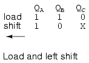
Arriba desplazamos el mismo patrón de datos un bit a la izquierda.
Hay un problema con la figura anterior de "desplazamiento a la izquierda". No hay mercado para ello. Nadie fabrica una pieza desplazada a la izquierda. Un "dispositivo real" que cambia una dirección puede conectarse externamente para cambiar la otra dirección. O deberíamos decir que no hay izquierda ni derecha en el contexto de un dispositivo que se desplaza en una sola dirección. Sin embargo, existe mercado para un dispositivo que se desplazará hacia la izquierda o hacia la derecha cuando lo ordene una línea de control. Por supuesto, izquierda y derecha son válidas en ese contexto.
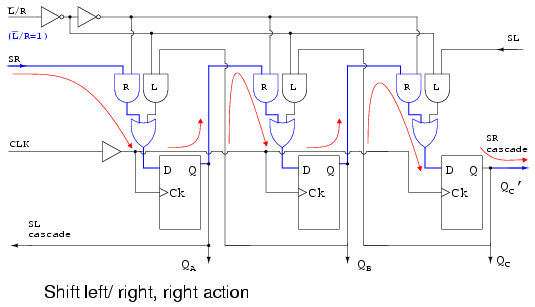
Lo que tenemos arriba es un registro de desplazamiento hipotético capaz de desplazarse en cualquier dirección bajo el control deL'/R. Está configurado conL'/R=1para cambiar la dirección normal, a la derecha.L'/R=1habilita el multiplexor Y las puertas etiquetadasR. Esto permite que los datos sigan el camino ilustrado por las flechas, cuando se aplica un reloj. La ruta de conexión es la misma que la figura "demasiado simple" de "desplazamiento a la derecha" de arriba.
Los datos cambian enSR, aQA, aQB, aQC, donde sale encascada SR. Este pin podría conducirSRde otro dispositivo a la derecha.
¿Qué pasa si cambiamos?L'/R to L'/R=0?
ConL'/R=0, el multiplexor Y las puertas etiquetadasLestán habilitados, lo que produce una ruta, mostrada por las flechas, igual que la figura anterior de "desplazamiento a la izquierda". Los datos cambian enSL, aQC, aQB, aQA, donde sale encascada SL. Este pin podría conducirSLde otro dispositivo a la izquierda.
La principal virtud de las dos figuras anteriores que ilustran el "desplazamiento del registro hacia la izquierda/derecha" es la simplicidad. El funcionamiento del control izquierdo derecho.L'/R=0es fácil de seguir. Una parte comercial necesita la carga de datos paralela que implica el título de la sección. Esto aparece en la siguiente figura.
Ahora que podemos desplazarnos tanto hacia la izquierda como hacia la derecha medianteL'/R, agreguemosSH/LD', shift/load y las puertas AND etiquetadas como "load" para permitir la carga paralela de datos desde las entradasDA DB DC. CuandoSH/LD'=0, Y puertasR y Lestán deshabilitados, Y las puertas de "carga" están habilitadas para pasar datosDA DB DCa las entradas de datos FF. el próximo relojCLKregistrará los datos paraQA QB QC. Mientras estén presentes los mismos datos, se recargarán en relojes posteriores. Sin embargo, los datos presentes para un solo reloj se perderán de las salidas cuando ya no estén presentes en las entradas de datos. Una solución es cargar los datos en un reloj y luego proceder a cambiarlos en los siguientes cuatro relojes. Este problema se soluciona en el 74ALS299 añadiendo otra puerta AND al multiplexor.
If SH/LD'se cambia aSH/LD'=1, las puertas AND etiquetadas como "carga" están deshabilitadas, permitiendo el control izquierdo/derecho.L'/Rpara establecer la dirección de cambio en elL o RY puertas. El desplazamiento es como en las figuras anteriores.
Lo único que se necesita para producir un dispositivo integrado viable es agregar la cuarta puerta AND al multiplexor como se mencionó para el 74ALS299. Esto se muestra en la siguiente sección de esa parte.
Dispositivos paralelo-paralelo y universales
Echemos un vistazo más de cerca a los registros de desplazamiento de entrada serie/salida paralelo disponibles como circuitos integrados, cortesía de Texas Instruments. Para obtener hojas de datos completas del dispositivo, siga los enlaces.
- Registro de desplazamiento de 4 bits de entrada/salida paralela SN74LS395A
- Registro de desplazamiento universal de 8 bits de entrada/salida paralela SN74ALS299
Ya hemos visto los detalles internos del SN74LS395A, consulte la figura anterior, registro de desplazamiento de entrada/salida paralela 74LS395 con salida de tres estados. Directamente arriba está el símbolo ANSI para el 74LS395.
¿Por qué sólo 4 bits, como lo indicaSRG4¿arriba? Tener entradas y salidas paralelas, además de los pines de control y alimentación, no permite más bits de E/S (entrada/salida) en un DIP (paquete en línea dual) de 16 pines.
Rindica que las etapas del registro de desplazamiento se restablecen mediante entradaCLR'(media flecha activa de baja inversión en la entrada) de la sección de control en la parte superior del símbolo.OC', cuando esté bajo, (invierta la flecha nuevamente) habilitará (EN4) los cuatro buffers de salida triestado (QA QB QC QD ) en la sección de datos. Cargar/cambiar' (LD/SH') en el pasador (7) corresponde a las partes internasM1(carga) yM2(cambio). Busque prefijos de1 y 2en el resto del símbolo para determinar qué es lo que controlan estos.
El reloj sensible al borde negativo (indicado por la flecha invertida en el pin-10)C3/2tiene dos funciones. Primero, el3 of C3/2afecta a cualquier entrada que tenga un prefijo de3, decir2,3D o 1,3Den la sección de datos. Esta sería una carga paralela enA, B, C, Datribuido aM1 y C3 for 1,3D. Segundo,2 of C3/2-la flecha derecha indica el registro de datos en cualquier lugar2aparece en un prefijo (2,3Den el pin-2). Así tenemos el cronometraje de datos enSERenQAcon modo2. La flecha derecha despuésC3/2contabiliza los cambios en las etapas internas del registro de cambiosQA QB QC QD.
Los triángulos que apuntan a la derecha indican almacenamiento en búfer; el triángulo invertido indica triestado, controlado por elEN4. Tenga en cuenta que todos los4s en el símbolo asociado con elENfrecuentemente se omiten. EtapasQB QCSe entiende que tienen los mismos atributos queQD. QD'pasa en cascada al siguiente paqueteSERA la derecha.
La tabla anterior, condensada de la hoja de datos data '299, resume el funcionamiento del registro universal de desplazamiento/almacenamiento 74ALS299. Siga el enlace '299 de arriba para obtener todos los detalles. Las puertas multiplexorasR, L, cargaoperar como en las figuras anteriores de "desplazamiento de registro izquierda/derecha". La diferencia es que las entradas de modoS1 y S0seleccione desplazar a la izquierda, desplazar a la derecha y cargar con el modo configurado enS1 S0 = to 01, 10, y11respectivamente como se muestra en la tabla, habilitando puertas multiplexorasL, R, ycargarespectivamente. Ver tabla. Una diferencia menor es la ruta de carga paralela desde las salidas de tres estados. En realidad, los buffers de los tres estados están (deben estar) deshabilitados porS1 S0 = 11para hacer flotar la E/Sbuspara su uso como insumos. Un autobús es una colección de señales similares. Las entradas se aplican aA, Ba través deH(los mismos pines queQA, QB, a través deQH) y encaminado alcargapuerta en los multiplexores, y en elDentradas de las FF. Los datos se cargan en paralelo en un pulso de reloj.
La única nueva puerta multiplexora es la puerta AND etiquetadasostener, habilitado porS1 S0 = 00. ElsostenerLa puerta permite un camino desde elQsalida del FF de vuelta alsostenergate, a la entrada D del mismo FF. El resultado es que con el modoS1 S0 = 00, la salida se recarga continuamente con cada nuevo pulso de reloj. Así, se conservan los datos. Esto se resume en la tabla.
Para leer datos de salidasQA, QB, a través deQH, los buffers de tres estados deben estar habilitados porOE2', OE1' =00y modo =S1 S0 = 00, 01 o 10. Es decir, el modo es cualquier cosa exceptocarga. Ver segunda tabla.
Desplaza los datos a la derecha de un paquete hacia la izquierda, se desplaza hacia la izquierdaSRaporte. Cualquier dato desplazado hacia la derecha desde la etapa QHcascadas a la derecha vía QH'. Esta salida no se ve afectada por los buffers de tres estados. La secuencia de desplazamiento a la derecha paraS1 S0 = 10 is:
SR > QA > QB> QC > QD> QE > QF > QG > QH (QH')
Los datos de desplazamiento hacia la izquierda de un paquete hacia la derecha se desplazan en elSLaporte. Cualquier dato desplazado hacia la izquierda desde la etapa QAcascadas a la izquierda vía QA', tampoco se ve afectado por las reservas de los tres estados. La secuencia de desplazamiento a la izquierda paraS1 S0 = 01 is:
(QA') QA < QB<QC < QD<QE < QF < QG < QH (QSL')
El cambio puede tener lugar con los buffers de tres estados deshabilitados por uno deOE2' o OE1' = 1. Sin embargo, no se podrá acceder a las salidas del contenido del registro. Ver tabla.
El símbolo ANSI "limpio" para el registro de desplazamiento universal de 8 bits de entrada/salida paralela SN74ALS299 con salida de tres estados se muestra como referencia arriba.
Se muestra la versión anotada del símbolo ANSI para aclarar la terminología contenida en el mismo. Tenga en cuenta que el modo ANSI (S0 S1) está invertido del orden (S1 S0) utilizado en la tabla anterior. Eso invierte los números del modo decimal (1 y 2). En cualquier caso, estamos totalmente de acuerdo con la ficha técnica oficial, copiando esta inconsistencia.
Practical applications
El diagrama de bloques de Alarma con teclado remoto se repite a continuación. Anteriormente, construíamos el lector de teclado y la pantalla remota como unidades separadas. Ahora combinaremos el teclado y la pantalla en una sola unidad usando un registro de desplazamiento universal. Aunque están separados en el diagrama, el teclado y la pantalla están contenidos dentro del mismo gabinete remoto.
Cargaremos en paralelo los datos del teclado en el registro de desplazamiento con un solo pulso de reloj y luego los trasladaremos a la caja de alarma principal. Al mismo tiempo, transferiremos los datos del LED de la alarma principal al registro de cambio remoto para iluminar los LED. Simultáneamente trasladaremos los datos del teclado y los datos del LED al registro de desplazamiento.
Ocho LED y resistencias limitadoras de corriente están conectados a los ocho pines de E/S del registro de desplazamiento universal 74ALS299. Los LED solo se pueden controlar durante el Modo 3 conS1=0 S0=0. ElOE1' y OE2'Las habilitaciones triestado están conectadas a tierra para habilitar permanentemente las salidas triestado durante los modos.0, 1, 2. Eso hará que los LED se enciendan (parpadeen) durante el cambio. Si esto fuera un problemaEN1' yEN2'podría estar sin conexión a tierra y en paralelo conS1 y S0respectivamente para habilitar solo los buffers triestado y encender los LED durante el modo de espera,3. Mantengámoslo simple para este ejemplo.
Durante la carga paralela,S0=1invertido a 0, permite que los buffers triestado octales conecten a tierra los limpiaparabrisas del interruptor. Los contactos del interruptor superiores abiertos se elevan a un nivel lógico alto mediante la combinación de resistencia y LED en las ocho entradas. Cualquier cierre del interruptor cortocircuitará la entrada baja. Cargamos en paralelo los datos del interruptor en el'299en el relojt0cuando ambosS0 y S1son altos. Vea las formas de onda a continuación.
Una vezS0baja, ocho relojes (t0 tot8) cambiar los datos de cierre del interruptor fuera del'299a través delQh'alfiler. Al mismo tiempo, los nuevos datos del LED se transfieren aSRdel299por los mismos ocho relojes. Los datos del LED reemplazan los datos de cierre del interruptor a medida que avanza el cambio.
Después del reloj del octavo turno,t8, S1baja al modo de retención de rendimiento (S1 S0 = 00). Los datos en el registro de desplazamiento siguen siendo los mismos incluso si hay más relojes, por ejemplo,T9, t10, etc. ¿De dónde vienen las formas de onda? Podrían ser generados por un microprocesador si la velocidad del reloj no fuera superior a 100 kHz, en cuyo caso, sería inconveniente generar relojes después.t8. Si el reloj estuviera en el rango de megahercios, funcionaría continuamente. el reloj,S1 y S0sería generado por lógica digital, que no se muestra aquí.
Contadores de anillo
Si la salida de un registro de desplazamiento se retroalimenta a la entrada. resulta un contador de timbre. El patrón de datos contenido dentro del registro de desplazamiento recirculará siempre que se apliquen pulsos de reloj. Por ejemplo, el patrón de datos se repetirá cada cuatro pulsos de reloj en la figura siguiente. Sin embargo, debemos cargar un patrón de datos. Todo0's o todos1Eso no cuenta. ¿Es útil un nivel lógico continuo a partir de tal condición?
Tomamos disposiciones para cargar datos en el registro de desplazamiento de entrada/salida en paralelo configurado como un contador de anillo a continuación. Se puede cargar cualquier patrón aleatorio. El patrón más útil generalmente es un solo1.
Cargando binario1000en el contador de anillos, arriba, antes de cambiar, se obtiene un patrón visible. El patrón de datos para una sola etapa se repite cada cuatro pulsos de reloj en nuestro ejemplo de 4 etapas. Las formas de onda para las cuatro etapas tienen el mismo aspecto, excepto por el retraso de un reloj de una etapa a la siguiente. Vea la figura a continuación.
El circuito de arriba es una división por4encimera. Al comparar la entrada del reloj con cualquiera de las salidas, se muestra una relación de frecuencia de 4:1. ¿Cuántas etapas necesitaríamos para un contador de anillos dividido por 10? Diez etapas recircularían el1cada10pulsos de reloj.
Un método alternativo para inicializar el contador de timbres para1000se muestra arriba. Las formas de onda de cambio son idénticas a las anteriores y se repiten cada cuatro pulsos de reloj. El requisito de inicialización es una desventaja del contador de timbre frente a un contador convencional. At a minimum, it must be initialized at power-up since there is no way to predict what state flip-flops will power up in. In theory, initialization should never be required again. En la práctica real, los flip-flops podrían acabar corrompiéndose por el ruido, destruyendo el patrón de datos. Un contador "autocorrector", como un contador binario síncrono convencional, sería más fiable.
El contador síncrono binario anterior sólo necesita dos etapas, pero requiere puertas decodificadoras. El contador de timbre tenía más etapas, pero se autodecodificaba, guardando las puertas de decodificación de arriba. Otra desventaja del contador de anillos es que no es "autoarranque". Si necesitamos las salidas decodificadas, el contador en anillo parece atractivo, en particular, si la mayor parte de la lógica está en un paquete de registro de desplazamiento único. De lo contrario, el contador binario convencional es menos complejo sin el decodificador.
Las formas de onda decodificadas del contador binario síncrono son idénticas a las formas de onda del contador de anillo anterior. La secuencia del contador es (QA QB) = (00 01 10 11).
Johnson counters
The contador de anillo de cola de interruptor, también conocido como elcontador johnson, supera algunas de las limitaciones del contador de anillos. Al igual que un contador de anillo, un contador Johnson es un registro de desplazamiento que se retroalimenta sobre sí mismo. Requiere la mitad de las etapas de un contador anular comparable para una proporción de división determinada. Si la salida complementaria de un contador en anillo se retroalimenta a la entrada en lugar de la salida verdadera, se obtiene un contador Johnson. La diferencia entre un contador anular y un contador Johnson es qué salida de la última etapa se retroalimenta (Q o Q'). Compare cuidadosamente la conexión de retroalimentación a continuación con el contador de timbre anterior.
Esta conexión de retroalimentación "invertida" tiene un profundo efecto sobre el comportamiento de circuitos que de otro modo serían similares. Recirculación de un solo1alrededor de un contador en anillo divide el reloj de entrada por un factor igual al número de etapas. Mientras que un contador Johnson divide por un factor igual al doble del número de etapas. Por ejemplo, un contador anular de 4 etapas se divide por4. Un contador Johnson de 4 etapas se divide por8.
Inicie un contador Johnson limpiando todas las etapas para0s antes del primer reloj. Esto suele hacerse en el momento del encendido. Con referencia a la figura siguiente, el primer reloj avanza tres0es de ( QA QB QC) a la derecha en ( QB QC QD). El1 at QD' (el complemento de Q) se desplaza nuevamente aQA. Por lo tanto, comenzamos a cambiar1s a la derecha, reemplazando el0s. Donde un contador de anillo recirculaba un solo1, el contador Johnson de 4 etapas recircula cuatro0s entonces cuatro1s para un patrón de 8 bits y luego se repite.
Las formas de onda anteriores ilustran que un contador Johnson genera ondas cuadradas multifásicas. La unidad de 4 etapas anterior genera cuatro fases superpuestas de un ciclo de trabajo del 50%. ¿Cuántas etapas se necesitarían para generar un conjunto de formas de onda trifásicas? Por ejemplo, un contador Johnson de tres etapas, impulsado por un reloj de 360 Hertz, generaría tres 120oondas cuadradas en fase a 60 Hertz.
Las salidas de los flop-flops en un contador Johnson son fáciles de decodificar en un solo estado. A continuación, por ejemplo, los ocho estados de un contador Johnson de 4 etapas se decodifican mediante no más de una puerta de dos entradas para cada uno de los estados. En nuestro ejemplo, ocho de las dos puertas de entrada decodifican los estados de nuestro contador Johnson de ejemplo.
No importa la longitud del contador Johnson, sólo se necesitan puertas decodificadoras de 2 entradas. Tenga en cuenta que podríamos haber utilizado entradas no invertidas para elANDpuertas cambiando las entradas de la puerta de verdadera a invertida en los FF,Q to Q', (y viceversa). Sin embargo, estamos tratando de hacer que el diagrama anterior coincida con la hoja de datos del CD4022B, lo más cerca posible.
Arriba, nuestras ondas cuadradas de cuatro fases.QA to QDse decodifican en ocho señales (G0 to G7) activo durante un período de reloj de un ciclo completo de 8 relojes. Por ejemplo,G0está activo alto cuando ambosQA y QDson bajos. Por lo tanto, los pares de las distintas salidas de registro definen cada uno de los ocho estados de nuestro ejemplo del contador Johnson.
Arriba se muestra el diagrama interno más completo del contador Johnson CD4022B. Consulte la hoja de datos del fabricante para conocer detalles menores omitidos. La principal novedad en el diagrama en comparación con las figuras anteriores es ladetector de estado no permitidocompuesto por los dosNORpuertas. Eche un vistazo a la tabla de estados insertada. Hay 8 estados permitidos como se enumeran en la tabla. Dado que nuestra palanca de cambios tiene cuatro flip-flops, hay un total de 16 estados, de los cuales hay 8 estados no permitidos. Serían los que no aparecen en la tabla.
En teoría, no entraremos en ninguno de los estados no permitidos siempre que el registro de desplazamiento estéREINICIARantes del primer uso. Sin embargo, en el "mundo real", después de muchos días de funcionamiento continuo debido a ruidos imprevistos, perturbaciones en las líneas eléctricas, casi rayos, etc., el contador Johnson podría entrar en uno de los estados no permitidos. Para aplicaciones de alta confiabilidad, debemos planificar esta mínima posibilidad. Más grave es el caso en el que el circuito no se borra durante el encendido. En este caso, no hay forma de saber en cuál de los 16 estados se encenderá el circuito. Una vez en un estado no permitido, el contador Johnson no regresará a ninguno de los estados permitidos sin intervención. Ese es el propósito delNORpuertas.
Examina la tabla para ver la secuencia (QA QB QC) = (010). Esta secuencia no aparece en ninguna parte de la tabla de estados permitidos. Por lo tanto (010) no está permitido. Nunca debería ocurrir. Si es así, el contador Johnson se encuentra en un estado no permitido, del cual necesita salir a cualquier estado permitido. Supongamos que (QA QB QC) = (010). el segundoNORla puerta reemplazaráQB = 1con un0alDentrada a FFQC. En otras palabras, el delincuente010es reemplazado por000. Y000, que aparece en la tabla, se desplazará hacia la derecha. Es posible que haya secuencias triple-0 en la tabla. Así es como elNORLas puertas sacan el contador Johnson de un estado no permitido a un estado permitido.
No todos los estados no permitidos contienen un010secuencia. Sin embargo, después de unos cuantos relojes, esta secuencia aparecerá de modo que eventualmente se escapará de cualquier estado no permitido. Si el circuito se enciende sinREINICIAR, las salidas serán impredecibles durante algunos relojes hasta que se alcance un estado permitido. Si esto es un problema para una aplicación en particular, asegúrese deREINICIARen el encendido.
Dispositivos con contador Johnson
Se encuentran disponibles un par de dispositivos contadores Johnson de circuito integrado con los estados de salida decodificados. Ya hemos analizado la lógica interna del CD4017 en la discusión sobre los contadores de Johnson. Los dispositivos de la serie 4000 pueden funcionar con fuentes de alimentación de 3V a 15V. La pieza 74HC, diseñada para compatibilidad TTL, puede funcionar con un suministro de 2 V a 6 V, contar más rápido y tiene una mayor capacidad de accionamiento de salida. Para obtener hojas de datos completas del dispositivo, siga los enlaces.
-
CD4017 Contador Johnson con 10 salidas decodificadas
CD4022 Contador Johnson con 8 salidas decodificadas
- 74HC4017 Johnson counter, 10 decoded outputs
Los símbolos ANSI para el contador Johnson módulo-10 (divide entre 10) y módulo-8 se muestran anteriormente. El símbolo adopta las características de un contador más que de un derivado de registro de desplazamiento, que es lo que es. Las formas de onda del CD4022 módulo-8 y su funcionamiento se mostraron anteriormente. El contador de décadas CD4017B/74HC4017 es un contador Johnson de 5 etapas con diez salidas decodificadas. El funcionamiento y las formas de onda son similares al CD4017. De hecho, el CD4017 y el CD4022 se detallan ambos en la misma hoja de datos. Consulte los enlaces anteriores. El 74HC4017 es una versión más moderna del contador de décadas.
Estos dispositivos se utilizan cuando se necesitan salidas decodificadas en lugar de las salidas binarias o BCD (decimal codificado en binario) que se encuentran en los contadores normales. Por decodificado, queremos decir que una línea de cada diez líneas está activa a la vez para el '4017 en lugar del código BCD de cuatro bits de los contadores convencionales. Consulte las formas de onda anteriores para la decodificación 1 de 8 para el contador Octal Johnson '4022.
Practical applications
El contador Johnson de arriba desplaza un LED iluminado cada quinto de segundo alrededor del anillo de diez. Tenga en cuenta que se utiliza el 74HC4017 en lugar del '40017 porque la pieza anterior tiene una capacidad de transmisión más actual. De la hoja de datos, (en el enlace de arriba) operando en VCC= 5V, la VOH= 4,6 V a 4 mA. En otras palabras, las salidas pueden suministrar 4 ma a 4,6 V para controlar los LED. Tenga en cuenta que los LED normalmente funcionan con 10 a 20 ma de corriente. Sin embargo, son visibles hasta 1 ma. Este circuito simple ilustra una aplicación del 'HC4017. ¿Necesita una pantalla brillante para una exhibición? Luego, use buffers inversores para impulsar los cátodos de los LED conectados a la fuente de alimentación mediante resistencias de ánodo de menor valor.
El temporizador 555, que actúa como multivibrador astable, genera una frecuencia de reloj determinada por R1 R2 C1. Esto impulsa el 74HC4017 un paso por reloj como lo indica un solo LED iluminado en el anillo. Tenga en cuenta que si el 555 no acciona de manera confiable el pin de reloj del '4015, páselo por una única etapa de búfer entre el 555 y el '4017. Una variable R2podría cambiar la velocidad del paso. El valor del condensador de desacoplamiento C.2No es crítico. Se debe aplicar un condensador similar a los pines de alimentación y tierra del '4017.
El contador Johnson de arriba genera ondas cuadradas trifásicas, en fases 60oaparte con respecto a (QA QB QC). Sin embargo, necesitamos 120oformas de onda en fase de aplicaciones de energía (ver Volumen II, CA). EligiendoP1=QA P2=QC P3=QB'rinde los 120ofase deseada. Vea la figura a continuación. Si estos (P1 P2 P3) se filtran de paso bajo a ondas sinusoidales y se amplifican, este podría ser el comienzo de una fuente de alimentación trifásica. Por ejemplo, ¿necesita accionar un pequeño motor de avión trifásico de 400 Hz? Luego, alimente 6x 400Hz al circuito anterior.RELOJ. Tenga en cuenta que todas estas formas de onda tienen un ciclo de trabajo del 50%.
El siguiente circuito produce formas de onda trifásicas sin superposición, con un ciclo de trabajo inferior al 50%, para accionar motores paso a paso trifásicos.
Arriba decodificamos las salidas superpuestas. QA QB QCa resultados que no se superponganP0 P1 P2como se muestra a continuación. Estas formas de onda impulsan un motor paso a paso trifásico después de una amplificación adecuada desde el nivel de miliamperios hasta el nivel de amperaje fraccionario utilizando los controladores ULN2003 que se muestran arriba, o el controlador de par Darlington de componentes discretos que se muestra en el circuito siguiente. Sin contar el controlador del motor, este circuito requiere tres paquetes IC (circuito integrado): dos paquetes FF duales tipo "D" y una puerta NAND cuádruple.
Un solo CD4017, arriba, genera las formas de onda paso a paso trifásicas requeridas en el circuito anterior al borrar el contador Johnson en el conteo.3. Contar3persiste durante menos de un microsegundo antes de borrarse. El otro cuenta (Q0=G0 Q1=G1 Q2=G2) permanecen durante un período de reloj completo cada uno.
Los controladores de transistores bipolares Darlington que se muestran arriba son un sustituto del circuito interno del ULN2003. El diseño de controladores está más allá del alcance de este capítulo de electrónica digital. Cualquiera de los controladores se puede utilizar con cualquiera de los circuitos generadores de formas de onda.
Las formas de onda anteriores tienen más sentido en el contexto de la lógica interna del CD4017 que se mostró anteriormente en esta sección. Sin embargo, elANDSe muestran las ecuaciones de activación para el decodificador interno. las señalesQA QB QCson salidas de registro de desplazamiento directo del contador Johnson que no están disponibles en los pines. ElQDLa forma de onda muestra el reinicio del'4017cada tres relojes.Q0 Q1 Q2, etc. son salidas decodificadas que en realidad están disponibles en los pines de salida.
Arriba generamos formas de onda para conducir unmotor paso a paso unipolar, que solo requiere una polaridad de señal de conducción. Es decir, no tenemos que invertir la polaridad del variador hacia los devanados. Esto simplifica el controlador de potencia entre el '4017 y el motor. Los pares Darlington de un diagrama anterior se pueden sustituir por el ULN3003.
Una vez más, el CD4017B genera las formas de onda requeridas con un reinicio después del recuento de terminales. Las salidas decodificadasQ0 Q1 Q2 Q3accionar sucesivamente los devanados del motor paso a paso, conQ4restablecer el contador al final de cada grupo de cuatro pulsos.
references
DataSheetCatalog.com http://www.datasheetcatalog.com/
http://www.st.com/stonline/psearch/index.htm seleccione lógicas estándar
http://www.st.com/stonline/books/pdf/docs/2069.pdfhttp://www.ti.com/ (Productos, Lógica, Árbol de Productos)
Lecciones en circuitos eléctricoscopyright (C) 2000-2023 Tony R. Kuphaldt, según los términos y condiciones delCC BY License.